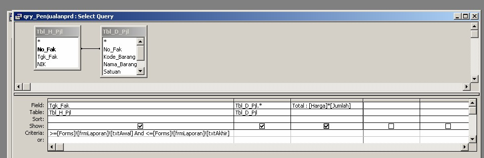
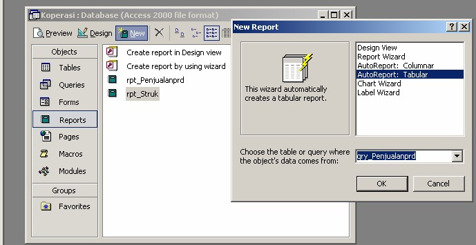
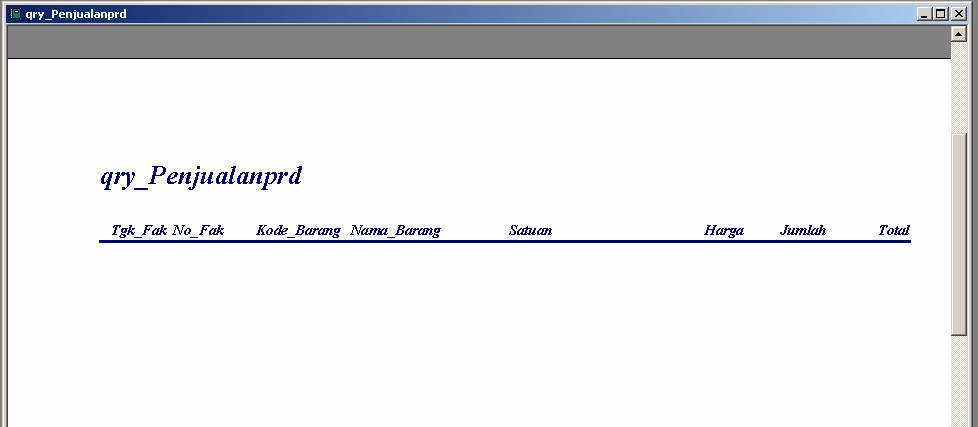
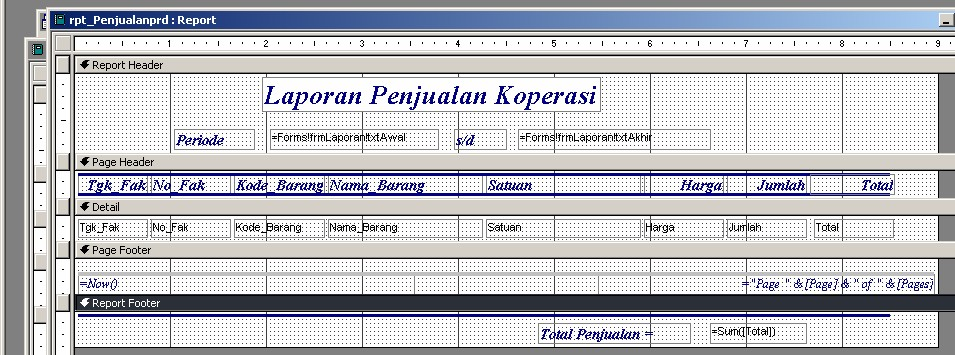

Digunakan untuk mencetak rincian penjualan yang terjadi dalam periode yang telah ditentukan. Berikut langkah-langkah pembuatan report ini :
1. Buat Sumber datanya yaitu dengan mebuat querynya, buat designnya seperti dibawah ini.

Pada field tgl_Fak criteria ditulis >=[Forms]![frmLaporan]![txtAwal] And <=[Forms]![frmLaporan]![txtAkhir] yang artinya Record yang akan ditampilkan dalam query ini jika Tgl_fak >= Tanggal yang diketikan pada txtAwal frmLaporan dan <= Tanggal yang diketikan pada txtAkhir frmLaporan. Hasil Query ini kan diurutkan berdasarkan No_Faktur (Pada Field No_Fak Sortnya di set Ascending). Simpan Query dengan nama qry_Penjualanprd
2. Sekarang mari kita buat reportnya
- Pada Jendela Database klik Report, klik New Pilih Auto Report Tabular, Sumber datanya pilih qry_Penjualanprd.

Klik OK, maka akan muncul input box yang meminta memasukan tanggal awal. Setelah kita masukan tanggal awalnya kan muncul input box lagi yange meminta memasukan tanggal akhir, setelah kita masukan baru reportnya muncul (Hal ini disebabkan karena kita belum mengaktifkan frm_Laporan). Jika range atau rentang tanggal yang kita masukkan tidak ada dalam table H_Pjl maka reportnya akan muncul seperti ini.

- Klik Design View untuk masuk ke mode design
Design Report diatas masih kurang bagus, untuk itu kita perlu merubahnya, caranya sama seperti pada design form. Desin Report setelah di rubah

- Simpan Report dengan nama rpt_Penjualanprd
Copyright © Herlan Lesmana
Created with the Freeware Edition of HelpNDoc: Easy to use tool to create HTML Help files and Help web sites